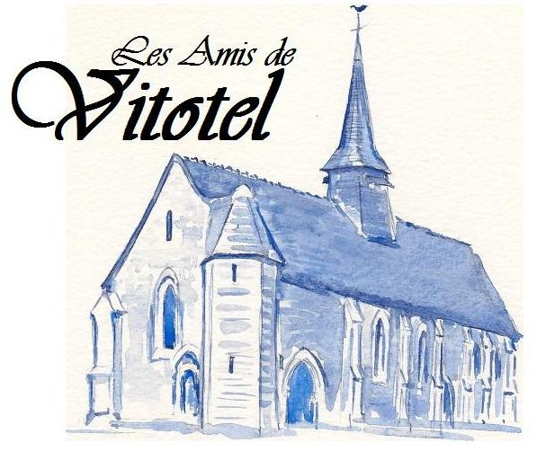

Amis de Vitotel
ACTUALITE :
en raison de la crise sanitaire, l'Assemblée générale est reportée à l'autome 2020.
Vous pouvez nous joindre par courrier électronique : 'contact@vitotel.fr'
ACTIVITES PASSEES :
La messe en l'honneur de Saint Clair a eu lieu le
samedi 13 juillet 2019 :
Messe à 18 h 30 à l'intérieur de Vitotel
Notre Assemblée
Générale 2019 a eu lieu le vendredi 25 octobre 2019 ;
18 h 00 dans la salle de la mairie de VITOT. convoquée et
présidée par le maire, Joël LELARGE
L'ordre du jour a été :
Hommage au président Francis DURAND
- rapport moral 2018,
- rapport financier 2018,
- Elections et formation du nouveau Bureau
- futurs travaux, animations 2020
- questions diverses.
Vous pouvez télécharger en cliquant ici votre formulaire de pouvoir et d'adhésion à l'association.
Version en anglais : Saint Michael of Vitotel ======= ,uù
ACTUALITE
:
en
raison de la crise sanitaire, l'Assemblée générale est
reportée à l'autome 2020.
Vous
pouvez nous joindre par courrier électronique :
'contact@vitotel.fr'
ACTIVITES
PASSEES :
La
messe en l'honneur de Saint Clair a eu lieu le samedi
13 juillet 2019 :
messe
à 18 h 30 à l'intérieur de Vitotel
Notre Assemblée
Générale 2019 a eu lieu le vendredi 25 octobre 2019 ;
18 h 00 dans la salle de la mairie de VITOT. convoquée et
présidée par le maire, Joël LELARGE
L’ordre du jour a �t�
:
Hommage au pr�sident
Francis DURAND
- rapport moral 2018,
- rapport financier 2018,
- �lections et formation du
nouveau Bureau
- futurs travaux, animations 2020
- questions diverses.
Vous pouvez t�l�charger en cliquant ici votre formulaire de pouvoir et d'adh�sion � l'association.
Version en anglais : Saint Michael of Vitotel >>>>>>> 783a8fb872ef96f1e39f7543dcb3618adaaf8eee
- L'Eglise de Vitotel a participé le
samedi 15 septembre et le dimanche 16 septembre 2018 de 14 h à
18 h aux Journées
Européennes du Patrimoine 2018
: 108 visiteurs
Télécharger ici le bulletin d'adhésion 2020.